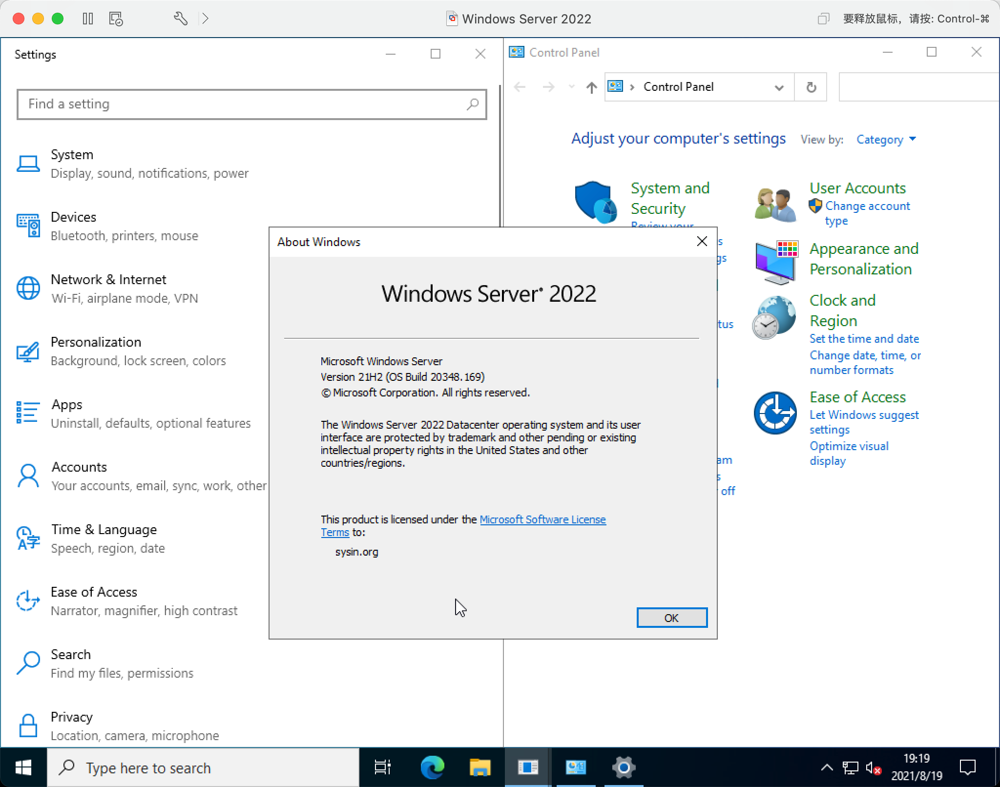
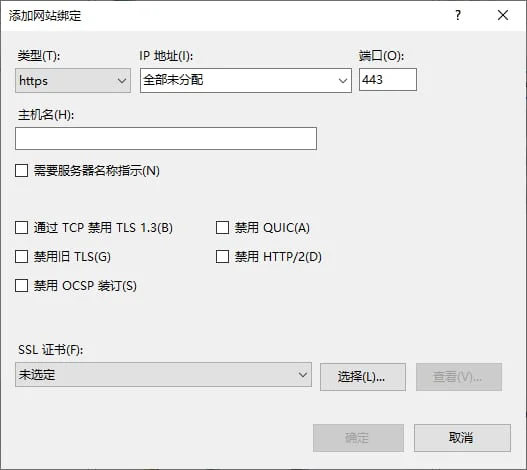
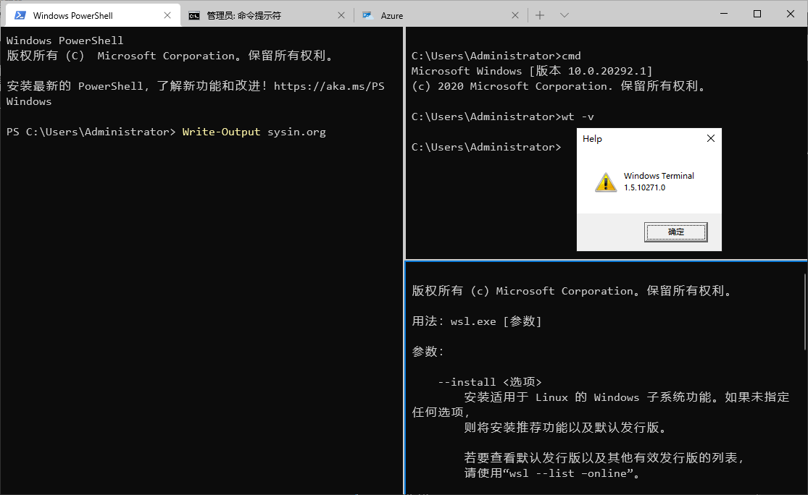

请访问原文链接：Windows Server 2022 中文版、英文版下载 (2026 年 7 月更新) 查看最新版。原创作品，转载请保留出处。
作者主页：sysin.org
Windows Server 2022 采用先进的多层安全机制、Azure 混合功能以及灵活的应用程序平台。

在此版本中，微软带来了安全核心功能，以帮助保护硬件、固件和 Windows Server 操作系统功能免受高级安全威胁的侵害。安全核心服务器构建于 Windows Defender System Guard 和基于虚拟化的安全等技术基础之上，可最大限度地降低固件漏洞和高级恶意软件的风险。新版本还提供安全连接，並添加了几项新功能，例如更快更安全的加密 HTTPS 连接、行业标准 SMB AES 256 加密等。
Windows Server 2022 通过以下功能改进了混合服务器管理：显著改进的 VM 管理、增强的事件查看器以及 Windows 管理中心的许多其他新功能。此外，此版本还包括对 Windows 容器的重大改进，例如便于更快下载的较小图像尺寸、简化的网络策略实施和用于 .NET 应用程序的容器化工具。
此次发布更新了什么？答：版本号，当然还有…
2021.09.01 更新，微软官方确认该版本为正式版：Windows Server 2022 now generally available—delivers innovation in security, hybrid, and containers
2021.08.19，微软在 VLSC 和 MSDN 发上发布了 Windows Server 2022 映像下载，虽然并未公开宣布，“released Aug 2021” 意味着已经发布正式版 (sysin)。该版本为 Build 20348.169，仍然基于 Windows 10 核心。看来 Windows 11 Server 版本遥遥无期。

早期直观体验
- 版本 21H2，根据名称预计今年秋季发布正式版（已经发布）
- 设置和控制面板仍然混乱，麦德龙风格和经典风格分裂设计仍然没有解决
- Edge 成为默认浏览器（自带版本 86）
- 支持 TLS 1.3，QUIC（HTTP/3），默认启用
- 终于可以运行 Windows Terminal（Windows Server 2019 因老旧的 1803 版本限制，至今不支持）


新增功能
TL;DR，请点击标题查看。
安全性
Azure 混合功能
其他关键功能
版本比较
TL;DR，请点击标题查看。
比较 Windows Server 2022 的 Standard、Datacenter 和 Datacenter：Azure Edition 版本
生命周期
支持日期
| Windows Server 版本 | 开始日期 | 主流结束日期 | 延长结束日期 |
|---|---|---|---|
| Windows Server 2022 | 2021年8月18日 | 2026年10月13日 | 2031年10月14日 |
下载地址
本文仅提供官方安装介质的获取方式。评估版可免费试用 180 天，仅供测试、学习和研究用途，请勿用于生产环境。
Windows Server 2022 LTSC 简体中文版、繁体中文版、英文版 (RTM released Aug 2021)：
百度网盘链接：https://pan.baidu.com/s/1_AUgLZXr7XdvOUxh3yXHuQ?pwd=358i
| Image | Language | Architecture | Size | SHA256 |
|---|---|---|---|---|
| SW_DVD9_Win_Server_STD_CORE_2022__64Bit_ChnSimp_DC_STD_MLF_X22-74289.ISO | 简体中文 | x64 (sysin) | 5459 MB | FC50FC31DDD4462AFC191E04A9523B577E02E6246A84DAD3584E5A655C155E43 |
| SW_DVD9_Win_Server_STD_CORE_2022__64Bit_ChnTrad_DC_STD_MLF_X22-74305.ISO | 繁體中文 | x64 (sysin) | 5538 MB | 8F77E4FCAEF6B9F26BFF02D5A99A871EFE9F7DC0DBBE096BE32916A62C367529 |
| SW_DVD9_Win_Server_STD_CORE_2022__64Bit_English_DC_STD_MLF_X22-74290.ISO | English | x64 (sysin) | 5293 MB | 1B20728133DEF2FD92A9947016C2E649CC0555F40A7F8F8DDF3203A38BF41240 |
Windows Server 2022 Languages and Optional Features（多国界面语言包）：
百度网盘链接：https://pan.baidu.com/s/1kVSi-4rumM1WEMtXhq_ekg?pwd=p3wj
- Windows Server 2022 Languages and Optional Features (released Aug 2021) 32/64 Bit MultiLanguage
大小：5803 MB
SHA256: 850A318C277F9B0D7436031EFD91B36F5D27DAD6E8EA9972179204A3FC756517
历史版本已清理。
Windows Server 2022 LTSC 简体中文版、繁体中文版、英文版 (updated Sep 2024)：
- VSS Version 百度网盘链接：https://pan.baidu.com/s/1AsTiiZZh8NtYtX3khjf9Eg?pwd=4npg
- MAC Version 百度网盘链接：https://pan.baidu.com/s/1REd-8-S_oWDYmEe6L93Gpw?pwd=hseb
Windows Server 2022 LTSC 简体中文版、繁体中文版、英文版 (updated Oct 2024)：
- VSS Version 百度网盘链接：https://pan.baidu.com/s/1qPCp__E_yHV-YdBnk7bg5g?pwd=qyfc
- MAC Version 百度网盘链接：https://pan.baidu.com/s/1O9vupPJqTzm71mxwIyIfUw?pwd=46nw
Windows Server 2022 LTSC 简体中文版、繁体中文版、英文版 (updated Nov 2024)：
- VSS Version 百度网盘链接：https://pan.baidu.com/s/1wuypJCXOs8cLIYWowQcr-w?pwd=f9tr
- MAC Version 百度网盘链接：https://pan.baidu.com/s/1_Jz1vA9BoB1eSqbmo_CmrQ?pwd=ywhn
Windows Server 2022 LTSC 简体中文版、繁体中文版、英文版 (updated Dec 2024)：
- MAC Version 百度网盘链接：https://pan.baidu.com/s/12hryH7XfhvAnUCwI_FoM1w?pwd=w7mg
Windows Server 2022 LTSC 简体中文版、繁体中文版、英文版 (updated Jan 2025)：
- VSS Version 百度网盘链接：https://pan.baidu.com/s/1MNgidXKBEZEFuWb257bKGQ?pwd=kwib
- MAC Version 百度网盘链接：https://pan.baidu.com/s/11BBfQGc-xTaFBnAeDtkpRw?pwd=kmke
Windows Server 2022 LTSC 简体中文版、繁体中文版、英文版 (updated Feb 2025)：
- VSS Version 百度网盘链接：https://pan.baidu.com/s/19OoX5P9eF84TPfkyfRi2vw?pwd=y2bb
Windows Server 2022 LTSC 简体中文版、繁体中文版、英文版 (updated Mar 2025)：
- VSS Version 百度网盘链接：https://pan.baidu.com/s/1xJJbcgHbK3qPJHdYiZZvuQ?pwd=bgcr
Windows Server 2022 LTSC 简体中文版、繁体中文版、英文版 (updated Apr 2025)：
- VSS Version 百度网盘链接：https://pan.baidu.com/s/1WXcKDho8IDH2qN16gcuN5Q?pwd=kwf9
- MAC Version 百度网盘链接：https://pan.baidu.com/s/1UwlMR29h8ngeQ3SfimGo1w?pwd=z897
Windows Server 2022 LTSC 简体中文版、繁体中文版、英文版 (updated May 2025)：
- VSS Version 百度网盘链接：https://pan.baidu.com/s/1lyT7P4QNCj5tEYf-0NOcUQ?pwd=eb5m
- MAC Version 百度网盘链接：https://pan.baidu.com/s/1-tKUyuAbiIV1LFdBTv5I4Q?pwd=weqa
Windows Server 2022 LTSC 简体中文版、繁体中文版、英文版 (updated Jun 2025)：
- VSS Version 百度网盘链接：https://pan.baidu.com/s/1GkCfwijEF7Ih8xkvz0mdYA?pwd=jcsv
Windows Server 2022 LTSC 简体中文版、繁体中文版、英文版 (updated July 2025)：
- VSS Version 百度网盘链接：https://pan.baidu.com/s/1Aoa0kfeVferd_Ql2HxkA7w?pwd=dee4
Windows Server 2022 LTSC 简体中文版、繁体中文版、英文版 (updated Aug 2025)：
- VSS Version 百度网盘链接：https://pan.baidu.com/s/1FqhOctkz_FHq-xFxn15OIQ?pwd=33ya
Windows Server 2022 LTSC 简体中文版、繁体中文版、英文版 (updated Sep 2025)：
- VSS Version 百度网盘链接：https://pan.baidu.com/s/1BUHl6fZqj-MI-pRDgZkRkg?pwd=4cvg
- MAC Version 百度网盘链接：https://pan.baidu.com/s/1ZzrlV5YOeG7QS8K--A5hTg?pwd=6p36
Windows Server 2022 LTSC 简体中文版、繁体中文版、英文版 (updated Oct 2025)：
- VSS Version 百度网盘链接：https://pan.baidu.com/s/1aWVC_kr-tEWpjxd9iCQ7rA?pwd=a58z
Windows Server 2022 LTSC 简体中文版、繁体中文版、英文版 (updated Nov 2025)：
- VSS Version 百度网盘链接：https://pan.baidu.com/s/11TVxW9H-sEhK2yrIlMwUDA?pwd=822v
Windows Server 2022 LTSC 简体中文版、繁体中文版、英文版 (updated Dec 2025)：
- VSS Version 百度网盘链接：https://pan.baidu.com/s/1lE8HRXqxWdPSvuBa2Jtgzw?pwd=g1jd
Windows Server 2022 LTSC 简体中文版、繁体中文版、英文版 (updated Jan 2026)：
- VSS Version 百度网盘链接：https://pan.baidu.com/s/1FK6ZiVdt1O0toE5rxa5l3Q?pwd=c9rh
Windows Server 2022 LTSC 简体中文版、繁体中文版、英文版 (updated Feb 2026)：
- VSS Version 百度网盘链接：https://pan.baidu.com/s/1YUwn0gqWR8WP80nP1L5nbA?pwd=jc6h
Windows Server 2022 LTSC 简体中文版、繁体中文版、英文版 (updated Mar 2026)：
- VSS Version 百度网盘链接：https://pan.baidu.com/s/1fqA60q3oBM0UAVDJZMuQbQ?pwd=q4kr
Windows Server 2022 LTSC 简体中文版、繁体中文版、英文版 (Updated Apr 2026)：
- VSS Version 百度网盘链接：https://pan.baidu.com/s/1SQi8TJhFSFPGlb1QyocdbA?pwd=9qcr
Windows Server 2022 LTSC 简体中文版、繁体中文版、英文版 (Updated May 2026)：
- VSS Version 百度网盘链接：https://pan.baidu.com/s/1ExXrYH_8f36DiLxofnpytQ?pwd=5ra2
- en-us_windows_server_2022_updated_may_2026_x64_dvd_c4723e47.iso
- zh-cn_windows_server_2022_updated_may_2026_x64_dvd_c4723e47.iso
- zh-tw_windows_server_2022_updated_may_2026_x64_dvd_c4723e47.iso
Windows Server 2022 LTSC 简体中文版、繁体中文版、英文版 (Updated Jun 2026)：
- VSS Version 百度网盘链接：https://pan.baidu.com/s/16eU_mpwKEjyKmmIrnz4lqA?pwd=ux8r
- en-us_windows_server_2022_updated_june_2026_x64_dvd_dda28eeb.iso
- zh-cn_windows_server_2022_updated_june_2026_x64_dvd_dda28eeb.iso
- zh-tw_windows_server_2022_updated_june_2026_x64_dvd_dda28eeb.iso
Windows Server 2022 LTSC 简体中文版、繁体中文版、英文版 (Updated Jul 2026)：
- VSS Version 百度网盘链接：https://pan.baidu.com/s/15PmDuww3jXFVOY7eNFbg7g?pwd=g6mb
- en-us_windows_server_2022_updated_july_2026_x64_dvd_75aa9e18.iso
- zh-cn_windows_server_2022_updated_july_2026_x64_dvd_75aa9e18.iso
- zh-tw_windows_server_2022_updated_july_2026_x64_dvd_75aa9e18.iso
本文仅提供安装介质的获取方式。评估版可免费试用 180 天，仅供测试、学习和研究用途，请勿用于生产环境。
参看：Windows Server 2022 release notes and system requirements.
虚机模板下载：
更多：Windows 下载汇总

文章用于推荐和分享优秀的软件产品及其相关技术，所有软件默认提供官方原版（免费版或试用版），免费分享。对于部分产品笔者加入了自己的理解和分析，方便学习和研究使用。任何内容若侵犯了您的版权，请联系作者删除。如果您喜欢这篇文章或者觉得它对您有所帮助，或者发现有不当之处，欢迎您发表评论，也欢迎您分享这个网站，或者赞赏一下作者，谢谢！
 支付宝赞赏
支付宝赞赏  微信赞赏
微信赞赏赞赏一下
敬请注册！点击 “登录” - “用户注册”（已知不支持 21.cn/189.cn 邮箱）。 请勿使用联合登录（已关闭）。